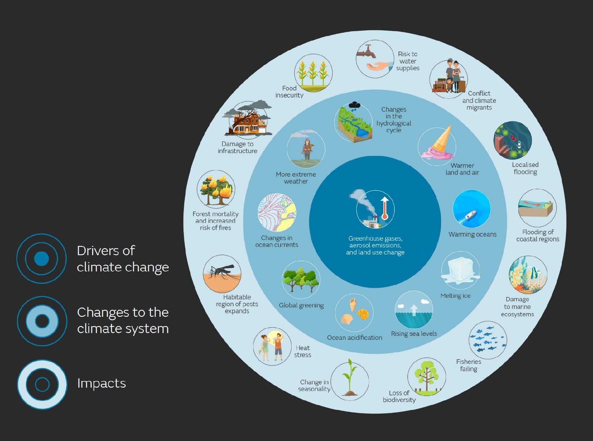

Impulsores, cambios e impactos
Sabemos a partir de las mediciones de temperatura que los promedios globales ya han aumentado alrededor de 1 grado Celsius. Los modelos climáticos sugieren que el calentamiento continuará si no cambiamos nuestro comportamiento.
Cuando los gases de efecto invernadero son liberados en todo el mundo, se distribuyen de manera más o menos uniforme en nuestra atmósfera. Esto crea una manta aislante alrededor de nuestro planeta, que gradualmente nos calienta. Pero es importante notar que este calentamiento no es uniforme a lo largo de todo el mundo y tampoco ocurre en proporción al origen de las emisiones.
El centro muestra qué está impulsando el cambio climático, el anillo interior muestra ejemplos de los cambios que están sucediendo en el sistema climático y el anillo exterior presenta ejemplos de los impactos que dichos cambios están provocando.
